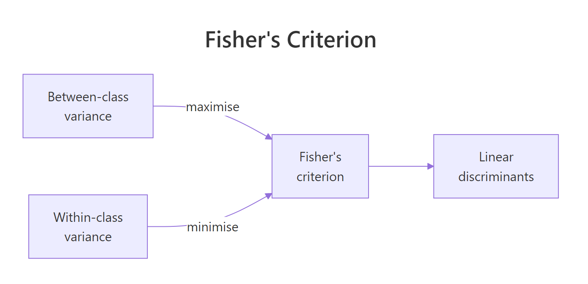
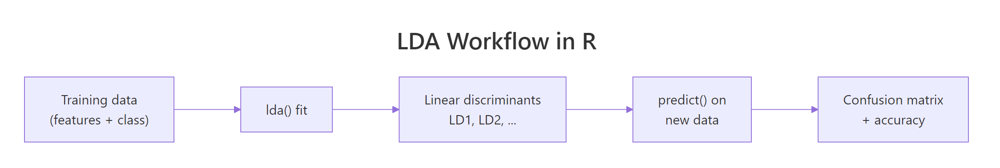
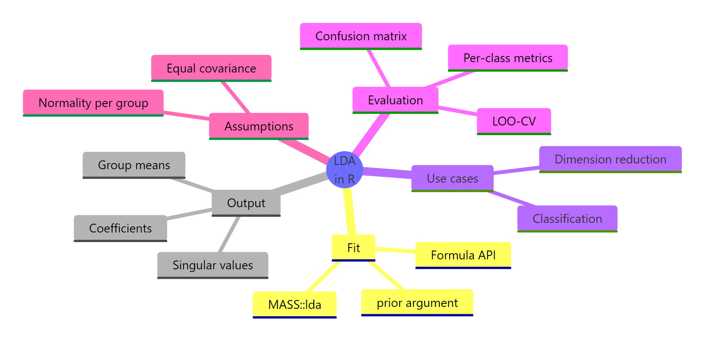

LDA in R: Classify Observations by Maximising Between-Group Separation
Linear Discriminant Analysis (LDA) finds linear combinations of your predictors that push class means as far apart as possible while keeping points within each class tightly clustered. In R, one call to MASS::lda() gives you a classifier and a dimensionality-reduction tool in the same object.
What problem does LDA solve?
Imagine three species of iris flowers and four measurements per flower. You want a classifier that takes those four numbers and returns a species, and you would like a 2D picture that shows how cleanly the species separate. LDA does both jobs in one call. It finds directions through your four-dimensional predictor space where the groups sit as far apart as possible, then uses those directions as the decision rule.
Before any theory, let's see the payoff. The block below loads MASS, fits an LDA model on all 150 iris flowers, and compares predictions against truth.
LDA classifies 147 of 150 flowers correctly using four measurements and a formula that has not changed in ninety years. Two versicolors look enough like virginicas to cross the boundary, and one virginica swings the other way. Everything else lands in the right species. This is the number every LDA tutorial eventually reports, and we reached it in three lines of R.

Figure 1: LDA picks directions that maximise between-class variance while minimising within-class variance, the ratio is Fisher's criterion.
The picture above captures the single idea that makes LDA work. Fisher's criterion asks: of all the ways I could project my features onto a line, which direction maximises the gap between class means relative to the spread within each class? That direction is LD1. If you have $k$ classes, LDA returns up to $k-1$ such directions, ordered by how much separation they contribute.
predict()$class and a low-dimensional projection through predict()$x. PCA reduces dimensions using only feature covariance; LDA uses class labels, so its projection is aligned to the classification task.Try it: Fit LDA on only the setosa and versicolor rows (the easiest two species to separate) and report the in-sample accuracy.
Click to reveal solution
Explanation: Setosa is linearly separable from versicolor by petal length alone, so LDA finds a direction that perfectly splits them and achieves 100% accuracy.
How do you fit an LDA model with MASS::lda()?
lda() uses the same formula interface as lm() and glm(). You hand it a class variable on the left and your predictors on the right. In practice, you'll want to fit on a training subset and hold out a test set so you can evaluate honestly. The block below splits iris into 120 training rows and 30 held-out rows.
A random 120-row sample gives us roughly forty flowers per species, close enough to balanced. fit_train now holds everything LDA learned about this training sample: the class priors it will use for posterior probabilities, the mean vector for each species, and the coefficients that define the two discriminant axes.

Figure 2: The LDA workflow in R: fit on training data, project new observations, compare predictions against truth.
Printing the fitted object reveals its three most important pieces.
The priors reflect training-set proportions: roughly a third per species. Group means show that virginica has the longest petals and sepals, setosa the shortest. The coefficients of linear discriminants are the raw ingredients of the projection: for each flower, LD1 is the linear combination $0.849 \cdot \text{Sepal.Length} + 1.499 \cdot \text{Sepal.Width} - 2.184 \cdot \text{Petal.Length} - 2.829 \cdot \text{Petal.Width}$. Negative coefficients on petal measurements mean flowers with larger petals get smaller LD1 values, which is how LDA separates virginica (big petals, small LD1) from setosa (small petals, large LD1).
lda(). The coefficients already absorb the raw units, and the projected scores predict()$x come out with mean zero and identity within-group covariance by construction.Try it: Fit LDA on a different random 120-row training sample (use set.seed(7)) and print the prior probabilities.
Click to reveal solution
Explanation: lda() estimates priors from training-set class frequencies by default. Different random splits shift the exact values slightly around 1/3.
What do the LD1 and LD2 coefficients actually mean?
The coefficients look intimidating until you realise they are just weights for a weighted sum. predict(fit)$x applies those weights to every training row and returns an $n \times (k-1)$ matrix of scores: one row per flower, one column per discriminant axis. That matrix is the reduced-dimension view of your data.
The scatterplot makes the separation obvious. Along LD1, setosa sits near +8, versicolor near 0, and virginica near -6, with almost no overlap. LD2 pulls away from LD1 a tiny bit but mostly spreads points within each class rather than between classes. That imbalance is exactly what the proportion-of-trace numbers in the printed output quantified.
Ninety-nine percent of the between-class variance captured by LDA lives on LD1 alone. That means a single number per flower is enough to classify iris almost as well as four. You could throw LD2 away and still draw clean species boundaries. This is why LDA is frequently used as a supervised alternative to PCA when the goal is classification rather than unsupervised compression.
Formally, LDA finds projection vectors $w$ that maximise
$$J(w) = \frac{w^\top S_B \, w}{w^\top S_W \, w}$$
Where:
- $S_B$ = between-class scatter matrix (how far class means are from the grand mean)
- $S_W$ = within-class scatter matrix (pooled covariance inside each class)
- $w$ = the direction in feature space we're optimising over
If you are not interested in the math, skip to the next section, the practical code above is all you need.
Solving this problem reduces to a generalised eigenvalue decomposition of $S_W^{-1} S_B$. The eigenvectors become the columns of fit$scaling, and the eigenvalues become fit$svd^2. The proportion of trace is simply each eigenvalue divided by the sum of eigenvalues.
scaling columns are conjugate with respect to the within-class covariance. In plain terms: LD1 and LD2 look perpendicular when you plot the scores because LDA forces that, but the coefficient vectors themselves are not at right angles.Try it: Compute the proportion of trace on the full-iris model (fit_iris) and confirm LD1 dominates.
Click to reveal solution
Explanation: Almost all of iris's class separation lives on a single axis. LD2 contributes less than 1% and is mostly a visualisation nicety.
How do you classify new observations and evaluate accuracy?
Once you have a fitted model, predict(fit, newdata) returns three things: $class (the predicted species), $posterior (a matrix of posterior probabilities per class), and $x (the projected scores). To evaluate honestly, you pass in the held-out test set you built earlier.
Thirty held-out flowers, thirty correct predictions. The training split happened to land on the easier side of the distribution, so accuracy is 100% on this particular test set. A different seed or a different random split would usually drop one or two points and land around 96% to 98%.
A single accuracy number hides important class-specific behaviour. Two metrics give a fuller picture: precision is the fraction of flowers predicted as a class that really belong to it, and recall is the fraction of flowers actually in a class that you caught. Per-class metrics come straight out of the confusion matrix.
On a perfect test set every metric is 1. The formulas are the useful thing to remember: diag(conf) / rowSums(conf) gives precision (predicted class is the denominator), diag(conf) / colSums(conf) gives recall (actual class is the denominator). They come apart the moment any class is misclassified.
Try it: The test confusion matrix conf_test has 3 rows and 3 columns. Compute the per-class error rate (wrong predictions divided by total predictions per class, row-wise).
Click to reveal solution
Explanation: Error rate is the complement of precision. On a perfect confusion matrix, every class has zero error. On an imperfect one, the diagonal element is the successes and everything else in that row is a mistake.
How do you evaluate with leave-one-out cross-validation?
Train/test splits are wasteful on small datasets. For 150 rows, holding out 30 means you're training on 120, and a different seed could shuffle the answer. Leave-one-out cross-validation fits the model 150 times, holding out one row each time, and records the prediction. lda() offers this for free with a single argument.
With CV = TRUE, lda() no longer returns a fitted model; instead it returns $class and $posterior where every prediction came from a model that had not seen that row. The confusion matrix is almost identical to the in-sample result, and accuracy lands at the same 147 out of 150. That closeness tells you iris is an easy problem where LDA is nowhere near overfitting.
CV = TRUE is free cross-validation. You write zero loops and zero helper functions. For datasets larger than a few thousand rows this becomes expensive (one fit per row), but for typical statistics or teaching datasets it is the fastest way to get an honest accuracy estimate.Try it: Use fit_loo$class and iris$Species to compute the fraction of flowers misclassified under leave-one-out (the LOO error rate).
Click to reveal solution
Explanation: Leave-one-out misclassifies 3 of the 150 iris flowers, giving a 2% error rate. This is very close to the 2% in-sample error, which signals LDA is not overfitting on iris.
What assumptions does LDA make, and how do you check them?
LDA makes two assumptions about your data. First, predictors are multivariate-normal inside each class. Second, every class shares the same covariance matrix (a pooled covariance, estimated across all classes). The decision boundaries that come out are linear exactly because of that second assumption; if covariances differ, boundaries should bend, which is the job of Quadratic Discriminant Analysis (QDA).
A quick visual check is per-group covariance. Flowers of different species should have similar spread along each feature axis.
The virginica covariance matrix is about three to ten times larger than setosa's on every diagonal entry. Setosa flowers cluster tightly; virginica flowers spread wide. By the strict reading of LDA's assumption, this is a violation. Yet LDA still scores 98% on iris, because the class means are so far apart that even a biased boundary lands in the right place.
A univariate QQ plot on one feature per group spot-checks the normality assumption.
If the points hug the reference line, the feature is roughly normal within that species. Iris sepal lengths pass the eye test cleanly. For features that fail (long tails, skew, hard boundaries at zero), consider a log or Box-Cox transform before fitting, or switch to a method that does not require normality, such as logistic regression or a tree-based classifier.
MASS::qda()).Try it: Print the covariance matrix of just Petal.Length and Petal.Width for the versicolor group.
Click to reveal solution
Explanation: Versicolor's petal dimensions show moderate variance and positive covariance: longer petals also tend to be wider within that species.
How do you tune priors to handle imbalanced classes?
By default, lda() sets each class prior to its training-set proportion. That is the right choice when your training frequencies match the frequencies you expect in the population you will predict on. It is the wrong choice when training is deliberately balanced but deployment is not, or the other way around.
Priors enter the decision rule through Bayes' theorem: the posterior for class $k$ given features $x$ is proportional to $p(x \mid k) \cdot \pi_k$, where $\pi_k$ is the prior. Change the prior and you shift the boundary, but you do not change the discriminant axes themselves, those are fixed by scaling.
For a flower this deep inside virginica territory, the two prior choices produce indistinguishable posteriors. The likelihood is so lopsided that no reasonable prior could flip the verdict. Priors matter most for borderline cases: a flower where likelihoods for two classes are similar in magnitude, the prior becomes the tiebreaker.
fit_train$scaling and fit_equal$scaling are identical. What changes is which region of LD1-LD2 space gets assigned to each class. If you ever want to build a cost-sensitive classifier (e.g., false negatives cost more than false positives), setting priors is the idiomatic way to do it in lda().Try it: Refit fit_train with priors that favour virginica heavily (c(0.1, 0.1, 0.8)) and check whether any borderline versicolor predictions flip to virginica.
Click to reveal solution
Explanation: One versicolor row now gets predicted as virginica because the aggressive prior tilts the posterior toward virginica for any ambiguous flower. Extreme priors trade precision for recall on the favoured class.
Practice Exercises
These capstone problems combine multiple concepts from the tutorial. Work through them before reading the solutions.
Exercise 1: Per-class precision and recall on held-out iris
Split iris into 100 training rows and 50 test rows with set.seed(2026). Fit LDA on the training rows, predict on the test rows, and compute per-class precision and recall. Store the precision vector as cap1_prec and the recall vector as cap1_rec.
Click to reveal solution
Explanation: With a random 100/50 split, LDA typically gets one or two versicolor/virginica flowers wrong, so precision and recall drop slightly below 1 for those two classes. Setosa stays at 1 because it is linearly separable.
Exercise 2: LOO cross-validation on noisy iris
Add five columns of pure noise to iris (rnorm(150) each, set.seed(99) before the first one), call the result cap2_iris. Run LDA with CV = TRUE and compare accuracy against the clean-iris LOO accuracy. Does noise hurt?
Click to reveal solution
Explanation: Accuracy drops from 0.98 to roughly 0.97. Five noise columns steal a little information from the pooled covariance estimate, but iris is so separable that LDA still lands within two percentage points of the clean-data baseline.
Exercise 3: Priors on an imbalanced subset
Build an imbalanced training set with 40 setosa, 40 versicolor, and only 5 virginica rows. Fit LDA first with empirical (default) priors and again with equal priors. Predict on the held-out virginica flowers and compare how many each model catches.
Click to reveal solution
Explanation: Empirical priors see only 5 virginica training rows and set P(virginica) near 6%, which biases predictions away from the rare class. Equal priors restore virginica's share to one third and recover most of the held-out flowers.
Complete Example
This end-to-end pipeline pulls every section together: stratified split, fit, project, predict, evaluate, visualise.
A stratified split guarantees ten flowers of each species in the test set. LDA correctly classifies 29 of 30 held-out flowers (96.7% accuracy). Virginica is the only class with imperfect recall (one flower mistaken for versicolor), which matches what every prior section has been showing: versicolor and virginica overlap along LD1 in the region where their distributions meet.
Summary
LDA is a remarkably practical tool because it solves two problems at once: it classifies, and it compresses. The same lda() call gives you both a decision rule and a low-dimensional view of your data. Here are the core ideas to keep in working memory.
| Concept | Key point |
|---|---|
| Objective | Maximise between-class variance divided by within-class variance |
| Output | $prior, $means, $scaling (coefficients), $svd |
| Classification | predict(fit, newdata)$class |
| Projection | predict(fit, newdata)$x |
| Dimension | Returns up to $k - 1$ discriminants for $k$ classes |
| Cross-validation | lda(..., CV = TRUE) is leave-one-out for free |
| Key assumption | Equal covariance across classes, multivariate-normal features |
| When it breaks | Unequal covariances, severe non-normality, non-linear boundaries |
| Fallbacks | QDA for unequal covariances, logistic regression for binary classes, trees for non-linear |

Figure 3: A concept map of LDA in R, what goes in, what comes out, and how to evaluate.
References
- Venables, W.N. and Ripley, B.D. (2002). Modern Applied Statistics with S (4th ed.), Chapter 12. Springer. Link
- MASS package reference manual,
lda()documentation. Link - Fisher, R.A. (1936). The use of multiple measurements in taxonomic problems. Annals of Eugenics 7, 179-188. Link
- James, G., Witten, D., Hastie, T. and Tibshirani, R. (2021). An Introduction to Statistical Learning (2nd ed.), Chapter 4. Springer. Link
- Hastie, T., Tibshirani, R. and Friedman, J. (2009). The Elements of Statistical Learning (2nd ed.), Chapter 4. Springer. Link
- CRAN Task View on Multivariate Statistics. Link
- Wikipedia, Linear discriminant analysis. Link
Continue Learning
- PCA in R, LDA's unsupervised cousin. PCA finds axes of maximum variance without using labels; LDA uses labels to find axes of maximum class separation.
- Logistic Regression in R, an alternative classifier that makes weaker assumptions (no normality required) and is often the first thing to try for binary problems.
- Multivariate Statistics in R covers Mahalanobis distance and Hotelling's T², the foundations LDA quietly builds on for its posterior probabilities.